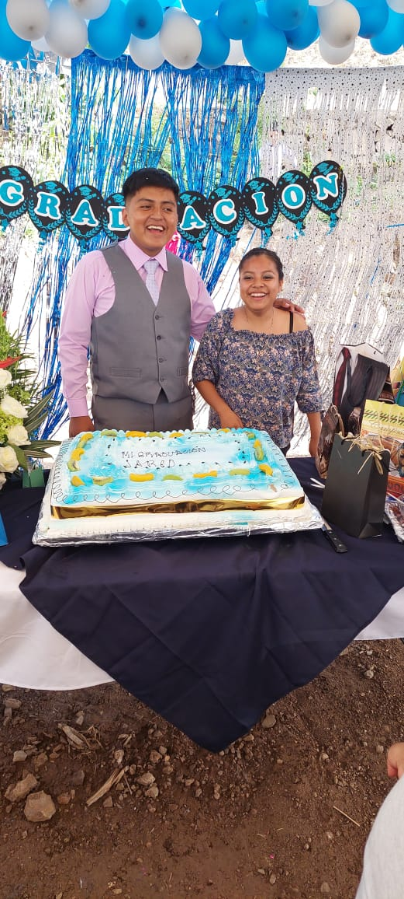
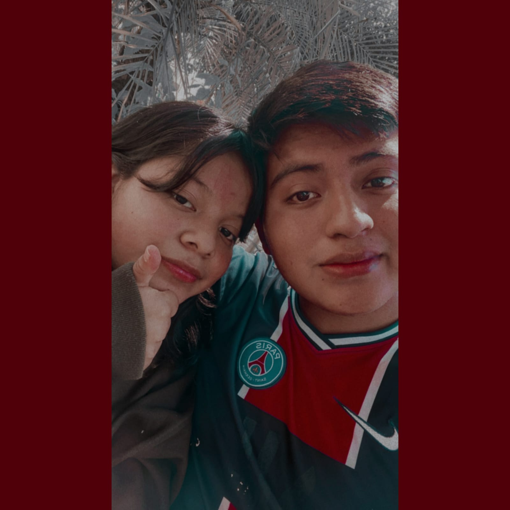
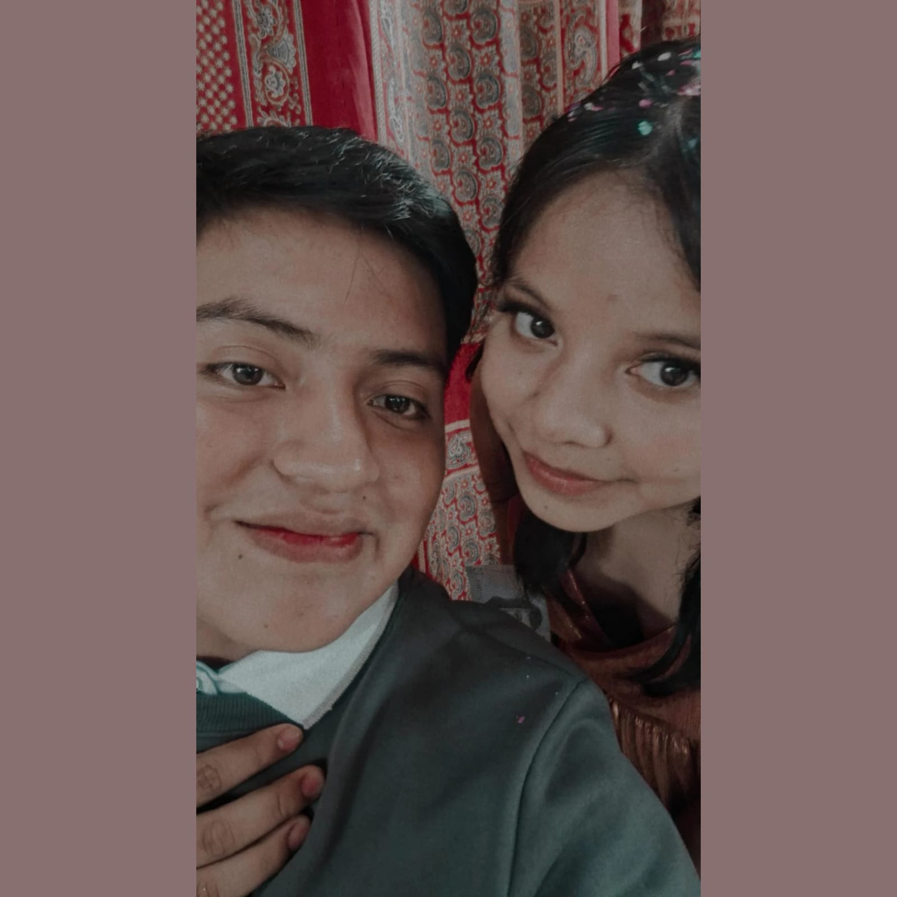
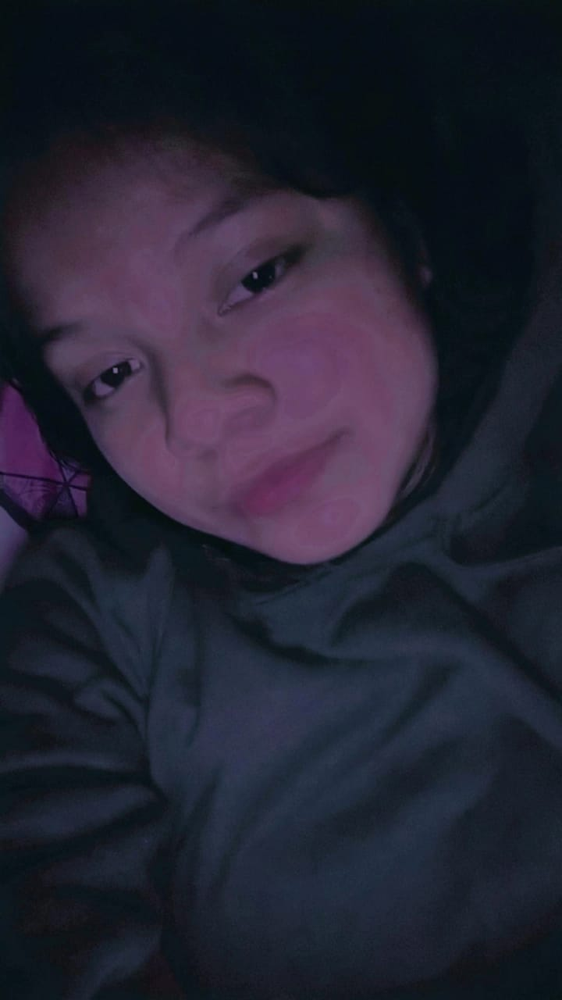
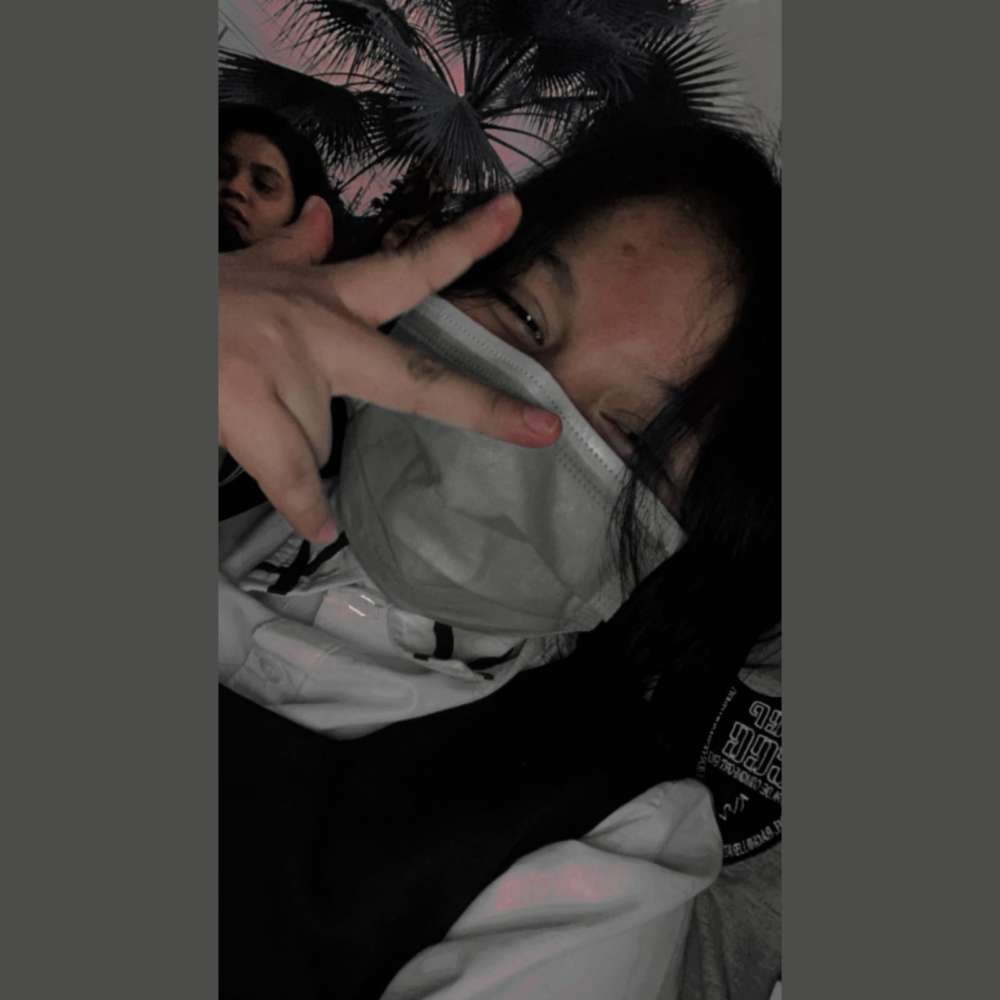
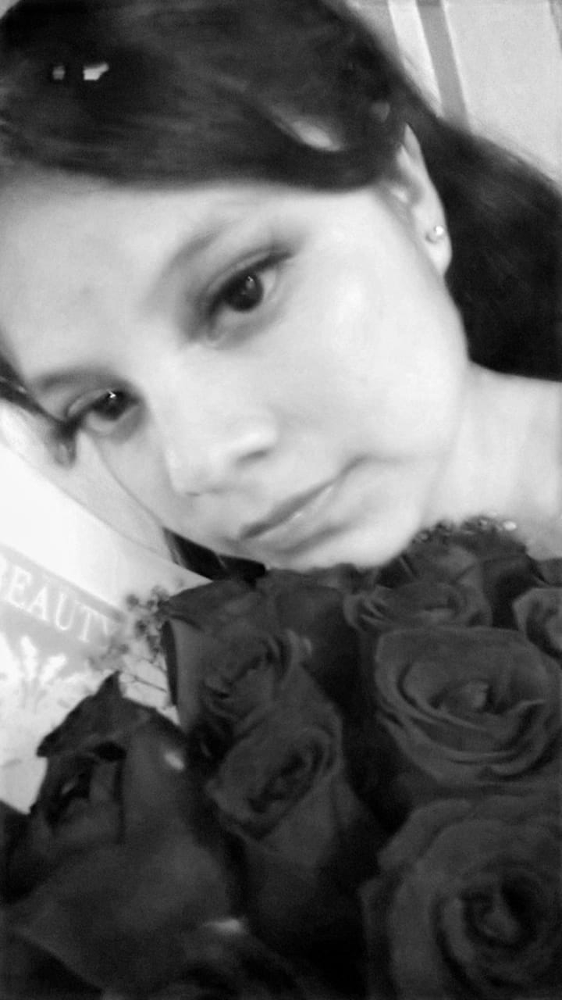
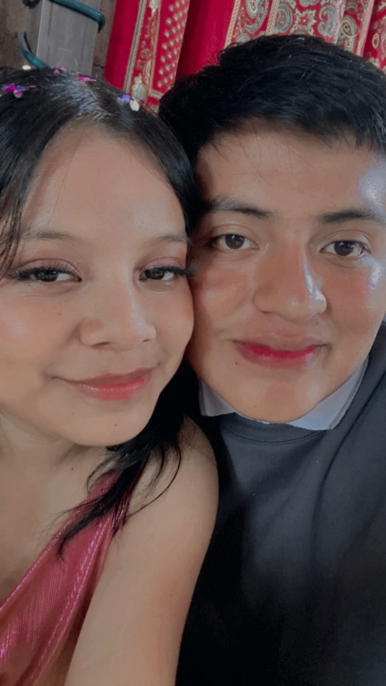
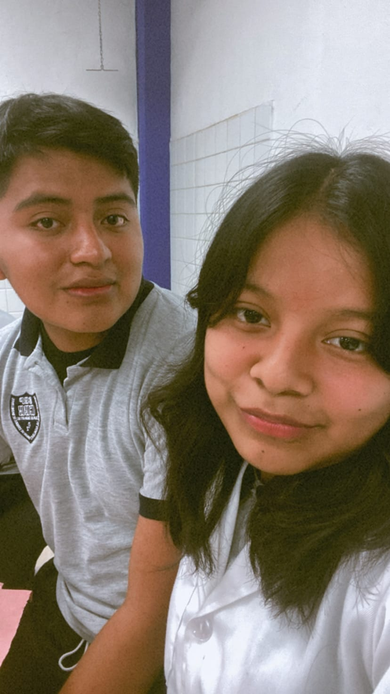

Bueno, para empezar quiero decirte que este año que pase a tu lado ha sido uno de mis mejores años de mi vida y quiero darte las gracias por estar aguantándome todo este tiempo.
Quiero agradecer que por una u otra razón nosotros terminamos en el mismo salón y pues la verdad me alegro que no solo hayas sido mi novia, sino que también antes de eso, tu ya eras una persona para mí, tú eras mi mejor amiga y yo creo que aun lo eres por que aun te sigo contando todo, aun me sigo divirtiendo cuando estoy contigo y me encanta el hecho de pensar que tú eres mi novia.
Hoy celebramos un año juntos, un año lleno de risas, aprendizajes y amor. Parece que fue ayer cuando nos conocimos en bachilleres. Recuerdo claramente ese primer encuentro, tus ojos brillantes y tu sonrisa cautivadora. Desde ese momento, supe que había algo especial entre nosotros, aunque al principio estaba confundido por el hecho de que éramos mejores amigos.
Nuestra historia comenzó en aquel salón, entre bromas y juegos, entre risas y momentos compartidos, me sentía totalmente conectado ti, porque en ti hay algo que no puedo ver en otra mujer. Cada día contigo era una aventura, cada conversación una oportunidad para conocerte más. Y así, poco a poco, fuimos construyendo nuestra historia.
Ahora, estamos en la universidad, un nuevo capítulo en nuestras vidas. Hemos crecido, hemos cambiado, pero nuestro amor sigue siendo el mismo. A pesar de los desafíos y las presiones de la universidad, siempre encontramos la manera de apoyarnos mutuamente. Tu amor me da la fuerza para enfrentar cualquier obstáculo.
Hoy, en nuestro aniversario, quiero agradecerte por ser mi compañera, mi confidente, mi amor. Gracias por cada sonrisa, cada abrazo, cada palabra de aliento. Gracias por hacer de este año el mejor de mi vida.
Mientras miramos hacia el futuro, estoy emocionado por lo que nos espera. Sé que habrá desafíos, pero también sé que juntos podemos superar cualquier cosa. Estoy emocionado por seguir creciendo contigo, por seguir aprendiendo de ti, por seguir amándote cada día más.
A medida que avanzamos en este viaje juntos, quiero que sepas cuánto valoro cada momento que hemos compartido. Desde las largas noches de estudio hasta las risas compartidas durante las pausas para jugar clash, cada instante contigo es un tesoro.
Recuerdo nuestras primeras discusiones, cómo tu gran intelecto me inspiro a ser mejor y no solo a ser mejor también a sentir una gran ola de emociones positivas tu así tu me inspiraste a esforzarme más. Tu dedicación y compromiso con tus estudios son solo una de las muchas cosas que admiro de ti.
Y ahora, mientras nos enfrentamos a los desafíos de la universidad, veo esa misma pasión y determinación en ti. Me haces querer ser una mejor persona cada día.
En este aniversario, quiero prometerte que estaré a tu lado en cada paso del camino. Estaré allí para celebrar tus éxitos y para apoyarte en los momentos difíciles. Estaré allí para reír contigo, para aprender contigo, para soñar contigo.
Así que aquí estamos, un año después, más fuertes y unidos que nunca. No puedo esperar a ver qué nos depara el futuro, pero sé que, siempre que estemos juntos, será increíble.
Feliz aniversario, mi amor. Aquí está nuestro amor, nuestra historia, y los muchos capítulos que aún quedan por escribir. Te amo. ❤️
Por aca agregare algunas fotos de nuestras aventuras.

JAJA esa foto es de la comida de la mi clausura, que la verdad me alegre mucho cuando vi que llegaste.

ese dia creo que nos vimos solo un rato y ese dia fue cuando te di mi sueter color verde que despues aparecera otra foto con lo que sigue.
>

No podia faltar esta foto donde salimos tu y yo, poero esta vez era en tu fiesta JAJA, la verdad es que iba todo cagado por miedo de conocer a tu famnilia.

Aca tu estas con mi sueter que me hizo mucha ilusion ver que te tomabas fotos con mi sueter y la verdad esta foto es de mis favoritas.

Esta foto es de cuando estuvo el evento de navidad y que la verdad en ese tiempo ya pareciamos pareja y pues si, ahi ya me gustabas mucho.

Esta foto la puse por que tambien es de mis favopritas ya que tu tienes las rosas que te di y pues simplemente me facina la belleza que tu emanas.

aca puse otra foto de tu clausura por que encerio me encantaron las fotos que nos tomamos ahi ya que ese dia fue un dia especial y pues aunque tambien hubo algunos momentos malos ese dia yo solo queria abrazarte y no soltarte.

Bueno aca fue la foto del unico dia que fuiste a una practica de la profa de quimica -jajaja y la puse nomas por que si por que se mi hizo algo gracioso ademas de que ahi te vez hermosa.
Pues este video lo puse solo para recordar lo bien que la pasabamos en el cebach.